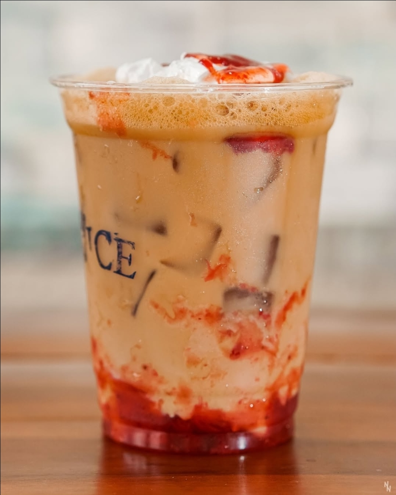
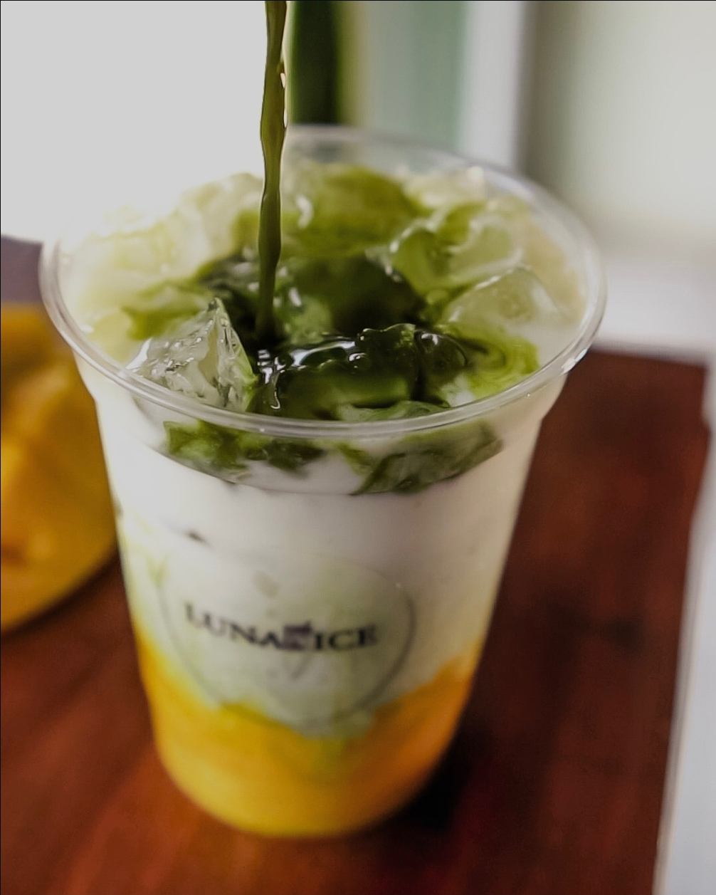
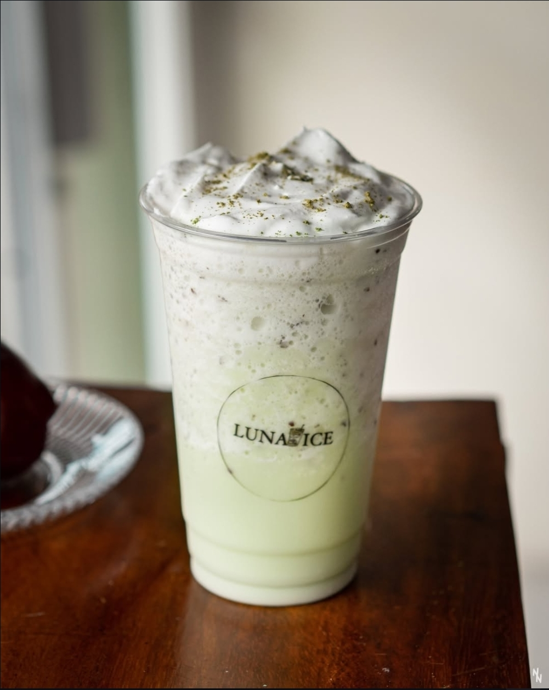

Clásico
Batido Luna Fresa
Un clásico refrescante preparado con fresas seleccionadas de la mejor calidad.
C$ 80.00

Especial
Batido Mango
Disfruta de la dulzura del mango en un batido completamente natural y refrescante.
C$ 95.00

Temporada
Batido Matcha latte
Té verde matcha artesanal combinado con leche seleccionada. Una opción cremosa, refrescante y con un toque dulce.
C$ 90.00